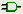

gschem Warmup for Beginners
You need to become familiar with doing a few things in gschem, so just run gschem and start playing around:
You get an initial blank page with a menus and a toolbar at the top. As you select operations from the menus, notice that there are usually keyboard shortcuts which can alternatively be used to access the menu functions.
When drawing a schematic, It’s a good idea to always start by setting some schematic boundaries to draw within, so we will do this by adding a title-block. I find that using a B sized title-block lets my schematics print at a nice size on letter sized paper:
- Bring up the Select Component window by selecting from the menu Add→Component or hit keyboard shortcut i. Or you could click the add component icon on the toobar ().
- In the Libraries list, select title-block.
- Under the Components list, select title-B.sym.
- Move the mouse onto the gschem drawing area and place the title-block symbol by clicking the left mouse button. Then click the right mouse button to abort adding more title-block symbols.

- With the mouse in the gschem drawing area, hit the keys ve (or select from menu View→Zoom Extents) to zoom the view to the title-block symbol extents.
- Back in the select components window, (bring it up again if you closed it), select the analog library and then select the component resistor-1.sym and place a couple of resistors on the schematic with the left mouse button. Notice that as you place each one it is a red color and that indicates it is selected.
- Zoom in (keyboard shortcut z) and zoom out (keyboard shortcut SHIFT z) in the area where you placed the resistors. If you get lost, zoom back to extents with ve. Notice that as you zoom in or out the viewable area centers around the mouse cursor.
- Alternate left clicking on both resistors to select them, but notice that if you don’t hit the resistor just right, the title-block is selected instead. We really don’t want to ever select the title-block again, so we can lock it to prevent its irritating selection: click so the title-block IS selected, then select Edit→Lock. Now it’s easier to select the resistors as we like.
- Move the resistors around with the middle mouse button.
- Select a resistor and then rotate with the er keys or the Edit→Rotate 90 Mode.
- Move the resistors relatively close together and then zoom in on them.
- Place the mouse on one of the resistor pins and hit the n key to start adding a net. Move the mouse to a pin on the other resistor and left click to attach the net to the pin. Right click to abort adding this net but notice that if you left click again you will start adding another net.
- Look at the toolbar and see that your mode has switched to adding nets. Before you can change resistor selections again, you will have to re-enter select mode with the s key or by clicking the select toolbar icon or by using the menu Edit→Select Mode. But if you try to move a resistor with the middle mouse button, you can do it and you will automatically re-enter select mode. You will have to play with doing things to get used to the gschem modes.
- If when you added the net between the resistors you get something that looks like this:
it means you missed the pin on the right resistor. Look closely and you’ll see the tip of the pin is red and you must start and stop nets with the mouse on this red spot to make a connection to the pin.
- Select the net between the resistors and delete it with the Delete key.
- Select a resistor and hit the ee keys. This will pop up the attribute editing window for the resistor. Here you can change existing attribute values or add new attributes with values to the resistor. Practice well with adding attributes and changing attribute values because you will need to be very familiar with managing attributes when using gschem.
Now go back to the tutorial and try working through the simple example there. If you encounter steps that aren’t clear, look through the gschem user documentation and attributes documentation on the gschem Documentation page.
tutorial by Bill Wilson (bill–at–gkrellm.net)